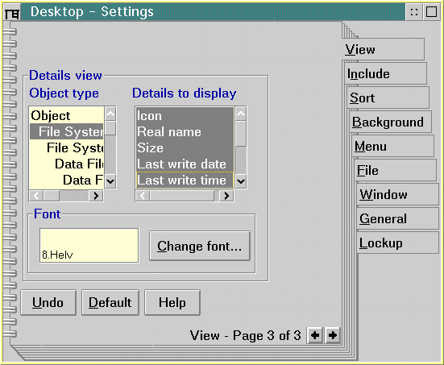

The basic unit of organization of SOM programs is the object. SOM objects consist of instance data and methods. SOM classes define the behavior of sets of like objects. You can think of a SOM class as a description of an object. The class defines the object's instance data and methods. Details data are part of instance data and define more accurately the behavior of the object.
Not all classes have the Details data section defined. Only those classes that have a requirement to store such information define this section as part of the instance data. After the Details data are defined, it is the class creator's responsibility to set and use them correctly. Details data allows you to:
The Details data of all objects contained in a container can be displayed in a Details view. The fields that are displayed in the Details view correspond to the Object type (class object) that is selected in the View page (page three of the View pages) of the Settings notebook. Once the Object type selected, the fields are listed in the Details to display drop-down list box. the following figure shows an example of the Details view for a Workplace Shell class. Each record provides information for a specific instance of an object belonging to the class.
Details for Instances of MyObject Class ┌───────┬─────────┬──────────────┬┬────────┬────────┬────────┐
│ Icon │ Title │ Object Class ││ Field1 │ Field2 │ Field3 │
├───────┼─────────┼──────────────┤├────────┼────────┼────────┤
Instance 1 │ │ │ ││ │ │ │
├───────┼─────────┼──────────────┤├────────┼────────┼────────┤
Instance 2 │ │ │ ││ │ │ │
├───────┼─────────┼──────────────┤├────────┼────────┼────────┤
│ │ │ ││ │ │ │
│ │ │ ││ │ │ │
└───────┴─────────┴──────────────┴┴────────┴────────┴────────┘
This Details view window is two windows separated by a split bar. The left side of the window contains, at least, the Title column (the default column) and can also contain the Details fields available for all classes and, in turn, for all objects. The right side of the window can be empty, if the objects to be represented are not descended from the chosen class. The user can choose:
By default, the system sets the WPFileSystem class that provides all Details fields to be visible. The Workplace Shell provides a Settings notebook, page three of the View pages, to set the class and Details fields to be displayed in the Details view. The following figure shows the Settings notebook, page three of the View pages:
A record that contains information for an object instance of the class is created by overriding wpQueryDetailsData. The column headings for a Details view are specified by overriding wpclsQueryDetailsInfo.
An object can inherit the set of Details data defined by its ancestors. A record containing Details data for an object can also contain sets of Details data from objects that are defined by its parent or ancestors. The Workplace Shell handles this by creating records of contiguous blocks of memory. To inherit the details defined by ancestor classes, wpQueryDetailsData calls the parent class wpQueryDetailsData, which calls its parent class wpQueryDetailsData, and so forth, until the oldest ancestor that defined Details data is reached. In addition to inheriting Details data from its ancestors, the object can have some of its own. For each call to wpQueryDetailsData, a variable-length block of memory containing a set of Details data for the object is added to the record. A pointer is moved to the end of the last block of memory added to the record, where the next call to wpQueryDetailsData adds the next block of memory. Each block in the record contains a set of Details data for the object defined by its class or by one of its ancestor classes, as shown in the following figure:
───────┬─────────────────┬─────────────────┬─────────────────┬──────
│ Details Defined │ Details Defined │ Details Defined │
│ by MyObject's │ by MyObject's │ by MyObject │
│ Ancestor │ Parent │ │
───────┴─────────────────┴─────────────────┴─────────────────┴──────
The format for Details data contained in a record is defined by overriding wpclsQueryDetailsInfo. The format is defined in a linked list of CLASSFIELDINFO data structures for each Details field in a record. This linked list is created the same way as a record: wpclsQueryDetailsInfo calls its parent class wpclsQueryDetailsInfo, which calls its parent class wpclsQueryDetailsInfo, and so forth. Each call adds a set of CLASSFIELDINFO data structures to the linked list until the list contains all CLASSFIELDINFO data structures for each Details field of the object's Details record, as shown in the following figure:
Format of Format of Format of
Details Data Details Data Details Data
Defined by Defined by Defined by
its Ancestor its Parent MyObject
┌────────────┐ ┌────────────┐ ┌────────────────────────────┐
──>Field1─>Field2────>Field3─>Field4────>Field5─>Field6─>Field7─>Field8───>
The CLASSFIELDINFO data structure describes the attributes of Details data for each field.